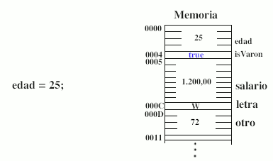
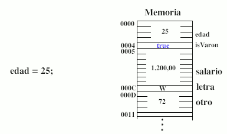

Tipus Primitiu
Tipus Primitiu
Quan es crea una variable d'una mena de de tipus primitiu, Java reserva un espai en memòria i l'associa al nom de la variable. De manera que cada vegada que aparega el nom de la variable en el programa el compilador el substitueix pel valor que hi ha en la zona de memòria reservada. Mentre existisca la variable estarà associada a la mateixa zona de memòria.
El valor emmagatzemat pot canviar, però la zona de memòria associada a la variable sempre és la mateixa. A més, si creem una nova variable i li assignem el valor d'una altra ja existent, el valor es copia en la zona de memòria de la nova variable, sent així dos valors independents. És a dir, si canvia la primera variable, la segona roman igual.
a)  b) 
b) 
Si no s'especifica un valor en la seua declaració, les variable primitives s'inicialitzen a zero (excepte boolean i char, que s'inicialitzen a false i '\0').
Tipus Estructurat o referència
Quan es crea una variable d'un tipus estructurat (tipus de referència), Java gestiona la memòria de manera diferent. Una referència és una variable que indica on està guardat un objecte en la memòria de l'ordinador. En declarar una variable de referència ( a) ) encara no es troba “apuntant / referenciant” a cap objecte en particular (llevat que es cree explícitament un nou objecte en la declaració), i per això se li assigna el valor null. Si es desitja que aquesta referència apunte a un nou objecte, ( b) ), és necessari crear l'objecte utilitzant l'operador new. Aquest operador reserva en la memòria de l'ordenador espai per a eixe objecte (atributs i mètodes).
a)  b)
b)
També és possible igualar la referència declarada a una altra referència a un objecte existent prèviament. Així, les dues variables referenciaran al mateix objecte.
Ara, si es modifica la variable objecte persona1, també canviarà la variable objecte persona2. En copiar una variable objecte, el que es copia és la zona de memòria a la qual apunta, però no l'objecte en si. En la imatge anterior podem veure que l'objecte "Carmen Lluch", 27, "Vinaròs" té dues referències apuntant-lo.
Nota: quan un objecte deixa d'estar referenciat (no hi ha cap variable o atribut que apunt a ell ), Java allibera la memòria ocupada per aquest objecte. En la imatge anterior, l'objecte "Luis Costa May", 27, "Vinaròs" ha sigut eliminat de la memòria. Aquest procés el realitza el recuperador de memòria ( garbage collector) de Java i és automàtic.